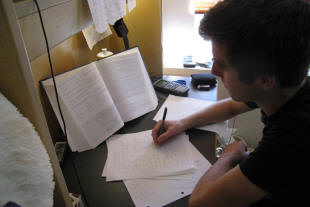

Study skills for Delta: what you have to be able to do

This is a guide that you should be following before you start a Delta course, not when you are coping with the demands of being in one.
There is a sister guide to this one called Be prepared
for Delta and the aim of that is to introduce you to the
broad outlines of some key concepts that you will encounter on the
course. That way, you will be able to recognise what it is that
your tutors are talking about or that you are being asked to read
about and set the ideas and issues in some kind of context.
If
you would like to open that guide in a new tab,
click here.
This guide is different because it focuses not on what you need
to know but on what you will need to be able to
do in terms of learning, thinking, writing and
teaching successfully to pass a course.
It is arranged in six sections which more or less follow the
taxonomy of skills developed originally by Bloom (1956) and revised
later by Anderson and Krathwohl. That taxonomy seeks to set
out:
a framework for classifying statements of what
we expect or intend students to learn as a result of instruction.
Krathwohl, 2002:212
and it applies to you as much as your learners.
In what follows, we'll be using the verbs we need to describe each
of the skills you need to deploy on a course and we'll also try to
identify what it is that the tasks you are set (or choose to take
on) during a course are asking you to do. For that, we'll
focus on some more verbs.
 |
 |
Remembering and knowing |
When you are sitting at your desk preparing to teach or reading
about teaching and language, there's little you have to remember
because references are to hand and there is time to think.
However, in the Module One examination and when you are actually
teaching, there are no references to hand so you have to rely on
your memory alone. There is no short cut to memorising facts
and terminology but help is at hand on this site. In the
Module One section, you will find links to lots of terminology tests
and reading through the guides to various language and methodology
areas will acquaint you with more.
Advertisers, of course, are keen to discover how often people have
to see something before they remember it and the usual figure they
settle on is seven. We can do a bit better than that because
we are actively trying to remember something rather than have it
foisted on us by an advertising copy writer. A better rule for
us is around four times:
- the first time you read, see or hear a fact, it may wash over you unconsciously or you may take a little notice
- the second time, you will be reminded that you have seen or heard it before
- the third time it will be familiar and
- the fourth time, you will be able to recall it actively
To shorten the time it takes to remember something, it's a useful
idea to write it down. The act of writing means that the fact
or idea is both noticed and recalled more easily.
However, if you never read through your notes, your time will have
been wasted because the item will be pushed out of your short-term
memory and deleted.
To make sure that it remains in your long-term memory, you have to
be aware of how your memory works. Schmidt (1990) provides the
following, based on Kihlstrom:

What this means is that you may pay attention to an item but if you don't retrieve it from your short-term memory store and do something with it (such as write it down), the item may be lost and forgotten. The usual figure given by psychologists who specialise in this kind of investigation is that the short-term or working memory store decays in 20 to 30 seconds so that's the time in which you have to make a note before the item is lost (lumen, no date).
Moral: take notes immediately on what you read and hear and review them frequently, once the next day and once more after a few days have elapsed. When you do the first review, take the time to re-write the notes in a neater and more memorable form. The act of doing so constitutes retrieval and rehearsal and it is that process which contributes to the item sticking in your long-term memory store.
Verbs which are asking you to be able to recall ideas, concepts
and terms are, for example:
Identify,
List,
Name,
Recall,
State,
Tell, Define
and so on.
 |
 |
Understanding |
It is, naturally, not enough to be able to remember lots of facts
and ideas. You need to understand them and demonstrate that you understand them.
There are some simple ways to make sure that you have understood
something:
- Think of your own examples of what is
meant. E.g.:
If you come across a writer who says:Irregular verbs in English fall into recognisably regular patterns and that aids our learners' memory for them so, for example, just as we have ring-rang-rung, we also have sing-sang-sung, drink-drank-drunk and so on.
OK, that's all true and the technical term for this is vowel mutation so in a notebook, you should write:Vowel mutation in irregular verbs forms: sing-sang-sung, drink-drank-drunk, buy-bought-bought, bring-brought-brought, seek-sought-sought etc.
The simple fact that you have added your own examples to the list demonstrates to you and anyone reading what you are writing or listening to what you are saying that you have understood what is meant by vowel mutation (also sometimes called umlaut). - Re-word what you hear or read in a way that
makes better sense to you. E.g.:
You have come across:Formal practising (as in a classroom or home study) can allow explicit knowledge to become implicit (i.e., automatically produced)
and that's probably quite easy to understand but if you leave it at that, you may not be able later to demonstrate that you understand the idea, so you could re-express it as something like:Explicit knowledge can be shown if a learner is able to say, for example, how question tags work in English but to make that knowledge implicit and automatically acted on requires extensive practice so that the forms are produced almost without the learner needing to think consciously about them.
and what you have done is demonstrated that you understand as well as adding an example which shows that you have grasped the essence of what you have read or heard. - Explain an idea to someone else.
A sure sign that you have understood something is the ability to explain it to someone who does not know the fact and cannot understand it until you make it clear.
Even if someone suitable is not near you, you can simulate this by speaking aloud and imagining you are explaining the item to someone else. For example:
You have read that:Transferred negation involves attaching the negation of a clause to the first (main) rather than the subordinate clause in a sentence as in, for example:
This is not a simple idea so now you have to sit back and try to say how you would explain this to someone else using a different example, of course. Perhaps something like:
I don't think Mary's coming
rather than the less natural:
I think Mary's not comingThe reason we say:
I don't believe it'll rain
rather than
I believe it won't rain
is that English often transfers the negative signal to the subordinate clause. You can see this is true if you add a tag question to the sentence because:
I don't believe it'll rain, will it?
rather than
I don't believe it'll rain, do I?
is the natural way to do this. - Transfer from diagram to prose or vice
versa
Frequently, on this site and elsewhere, concepts are explained through the use of diagrams (as above for memory issues) and one way to be sure you have understood is to restate a diagram in words or vice versa.
For example, a simple diagram such as:

can be explained in prose as:In predominately stress-timed languages, such as English and Dutch, the four parts of:
You can, naturally, do this the other way round and render prose such as:
I | want to | go to the | station
although they contain a varied number of syllables (between one and three), will take the same time to utter.
However, in predominately syllable-timed languages such as French, each syllable will take the same time to utter so want to will take twice as long as I and go to the three times as long.Material process verbs refer to doing, i.e., to events in the world such as break, explode, vanish, slide and so on but behavioural processes usually have animate subjects and include verbs such as sing, imagine, complain and so on
as a diagram in a notebook like:

which is simple enough to help you recall and demonstrate understanding of the types of verbal processes.
When you are writing on a Delta course, usually in a Background Essay for Module Two, you need to show that you have understood the concepts you are discussing and the system above works well in this regard. Make sure you:
- write clearly about what you have learned from authority or experience (or both)
- exemplify it with your own example (not one culled from the reference book)
- explain what it means
and that requires you to write in prose as well as itemise ideas and facts with lists and bullet points as we have done here.
Verbs which are asking you to be able to demonstrate
understanding of ideas, concepts and terms are, for example:
Compare,
Describe,
Discuss,
Explain,
Illustrate,
Rephrase,
Talk about
and so on.
 |
 |
Applying |
Once you have managed to recall and understand terms and
concepts, it's time to ask yourself how to apply these to the real
worlds of teaching and learning.
In Delta Module Two Background Essays, this will mostly concern you
when you are setting out the teaching solutions to the issues you
have identified with the system or skill you have analysed. At
other times, for example, in the Module One examination, you are
explicitly marked on your ability to apply concepts to the data you
are given in the question paper.
In Module Three, too, whichever is your topic choice, you are
expected to demonstrate that you have read and understood a good
deal but also that you are able to apply what you know to real-life
scenarios. Here are some examples of how you may want to do
this:
- For Module One, Paper 1, Task 4 (and other tasks in both
papers)
Here, for task 4, you are asked to identify strengths and weaknesses in an example of learner output. To do that accurately and clearly, you need to apply the terminology you have learned and understood to the task so, for example, if you are faced with a sentence such as:
Although she didn't have much money, but she was always generous
it is necessary to identify what's wrong (the duplication of the conjunctions) and then describe it as:While it is a strength that the learner has begun correctly to use although as a concessive subordinating conjunction, she has also inserted a coordinating conjunction, but, which is misplaced. Most Chinese languages double the conjunction in this way and that may be the source of the error.
And in that you have recalled the terms correctly, demonstrated that you understand them by noting the types of words and applied your knowledge to the explicit example you are given.
Easy. - For a Background Essay in Module Two
Here, you need to demonstrate the ability to apply your knowledge and understanding to specific cases.
For example, if you have identified as a problem that the English verbal aspect system is both complex and not usually parallelled in learners' first languages, you now need to examine how you might approach the issue in specific cases. To do that, you need to introduce your idea with something like:I noted above (Section 2.3.1) that learners whose first languages do not have a perfect aspect, although they may have somewhat parallel forms, often have difficulty grasping the concept of relative or relational tenses.
and then you go on to say what materials you use, how you encourage learners to notice the meaning and so on.
The first step is raising awareness of the nature of a relational tense in the perfect aspect such as:
John has finally arrived
to allow the learners to see two things:
that the tense refers to the present
that the nature of the present is determined by a past event
To do that, I ...
That is application of knowledge and understanding to the real world. - In Module Three
In this Module, you are required either to set out a proposed course programme or to set out a management proposal for change in an organisation. In both cases, this requires the application of knowledge and understanding of key ideas and concepts to the task.
The trick is linkage so you could begin each section by stating:The results of the needs analysis (Section 2.6) clearly show that these learners require good levels of speaking and writing skills in their work in English. Therefore, the first hour of each day is devoted to these skills set in the topic areas of meetings and technical reports to maintain relevance to their professional setting (as identified in Section 2.2).
orThe results of the situation analysis (Section 2.6) clearly show that the institution lacks the necessary information technology skills in house. This proposal, therefore, includes the option of outsourcing this area of our work in order to maximise the efficient use of time. The outsourced work will cover ....
As you can see in all three of these examples, there is no point in being able to apply knowledge and understanding if you do not explicitly state what you are applying it to.
Verbs which are asking you to demonstrate the ability
to apply your understanding of ideas, concepts and terms are, for
example:
Apply,
Complete,
Demonstrate,
Illustrate,
Discuss, Relate, Explain, Outline
and so on and they all occur in all three Modules.
 |
 |
Analysing |
Analysis goes hand-in-hand with application and may be considered
part of the ability to apply knowledge and understanding.
In particular, your ability to analyse data is tested and expected
in the following areas (but also throughout any decent course):
- Module One, Paper 1, Task 5
This task asks you to look at a piece of text (usually written) and identify not only the genre in which it is written or spoken but also the nature of some of the expressions and language items within it. That means you have to understand how to analyse language.
If, for example, you are faced with a piece of text taken from an instruction manual, you are likely to come across a procedural text, at least in part, although other parts of a text like this are often set out as information reports. You need to know and understand the differences and the salient characteristics of each text type and be able to apply your knowledge to analysing the text.
An example of how this is done might be:The text headings all refer to stages in the use of this machine and the addition of numbered diagrams aids the reader to know what part of the machine is being described.
As you can see, analysis is more than description.
The text itself, contains many behavioural verb processes, for example ...
and the textual themes refer to the ordering of events as in ...
In particular, the use of the fronted and heavily marked adverbials, under no circumstances (line 4) and before attempting to dismantle ... (line 18) show that care is being taken to give explicit warnings and instructions which is typical of a procedural text. - Background Essays for Module Two
The core of any background essay is the section in which you do two things:- analyse the language system or skill you have selected
- identify issues for a range of learners in a range of context and link them to the analysis
- Module Three
In both types of Module Three essays, you are required to present the data that you have gathered either on the learners for whom you are designing a course or on the institution for which you are making a management proposal. In both cases, you have to do more than present the data; you have to analyse it and identify the key issues so that your proposal will be linked to the data and your analysis of it.
Verbs which are asking you to be able to demonstrate the ability
to analyse the data you have are, for example:
Analyse,
Categorize,
Distinguish,
Examine,
Investigate,
Organize
and so on and they all occur in all three Modules.
 |
 |
Evaluating and judging |
In all three modules of the Delta scheme, you are required to
make evaluations of the data you have, the ideas you are suggesting
and the ways you have gathered data and information.
Evaluation requires all the skills we have so far covered and in
addition it requires you to be explicit about the criteria you are
using to judge the target of the evaluation.
Evaluation is a high-level skill which requires you to apply all the
previous four skills. You have to judge what is relevant, what
is crucial and what is peripheral and make a judgement concerning
its effectiveness and usefulness.
- In Module One, Paper 2
All three tasks in Paper Two require evaluation.
Task 1 requires you to look carefully at a test or an extract from one and, given the purposes of the test, to evaluate how well it will work to provide the data which the test setter wants to extract. To do that, you have to look at the test and judge it not only against a range of criteria you have learned and understand but against the purpose for which it is intended.
It's no good saying that a test is, for example, unreliable, if it is only intended to be administered once to a single learner or small group.
Task 2 presents you with an extract from some teaching material and asks for some identification and analysis of the purposes of the tasks. It also, however, requires some evaluation of the assumptions that the material writers were working from concerning language, skills and learning that underlie the materials.
Task 3 presents you with an extract or two from something such as a methodology or resource book, a lesson plan, a discussion of a lesson or tutor feedback. Your task is to answer a series of questions about it based on your knowledge of approaches, methods, theories, resources and roles. That requires the application of all the skills we have so far discussed and some evaluation of the material. - In Module Two
In Background Essays, when you come to writing about teaching solutions to the issues you have identified, you are explicitly required to evaluate how the selected procedures, techniques, resources and or materials might be used effectively in classroom practice.
After you have taught an observed and assessed lesson, you have to write a post-lesson Reflection and Evaluation document and, as its name implies, part of this requires you to reflect on and evaluate your own planning, teaching and the learners’ progress as evidenced in this lesson.
In the Professional Development Assignment you are required throughout to evaluate your own developmental progress and the ways in which you have tried to ensure that you have some. You are also asked to evaluate the ways you measured whether you were successful in your endeavours. - In Module Three, at the end of each section, you need to be clear that you are thinking about the effectiveness of what you did to gather data and what you propose based on what you know. That means identifying the gaps in your knowledge, being honest about any defectiveness in what you did and drawing together an overall picture of what was achieved.
There are no examples in the above simply because it is
impossible to provide them but the verbs you should be looking out
for include:
Appraise,
Assess,
Conclude,
Evaluate,
Judge,
Justify,
Measure
and so on and they all occur in all three Modules
 |
 |
Creating |
This is the highest level skill you will need for Delta and it applies only to Modules Two and Three simply because it is almost impossible reliably to asses anyone's creative abilities via an examination.
- In Module Two
You are asked to create, from scratch, complete lessons which will address at least some of the issues you have researched and written about in the Background essay. This means considering a range of factors which will include at least:- learners' needs and expectations
- the selection of achievable aims and objectives
- an understanding of how learning (probably) happens
- clear analysis of the skill or system which you are targeting
- an understanding of how the lesson fits with the other lessons and the course as a whole
- the role of materials, activities and tasks
- an appropriate general structure for the lesson which is developmental and logical
- an ability to justify and evaluate what you are doing both before and after the lesson
- In Module Three, whichever route you take, you will have to
draw together your understanding of the data you gather, the
needs of the learners or the institution and then synthesise all
of that into a sensible and justified proposal which you can
evaluate honestly and objectively.
That is not a task to be taken lightly.
At any time in these processes you may be asked to:
Assemble,
Collect,
Combine,
Construct,
Create,
Design,
Devise,
Formulate,
Make,
Manage,
Plan,
Prepare and
Propose
That can be quite a daunting list but this is the part of a Delta course that most people find the most rewarding and personally satisfying.
 |
 |
Combining the skills |
In this guide, the assumption may appear to be that the six
skills are separable and discrete entities but in the real world, of
course, they are often combined in various ways.
For example, when planning a lesson, all six skills will be in play
because you need to:
- remember what the aims of your lesson are and the nature of the skill or system that you are targeting
- remember and show you understand the terminology you need to explain how the systems and skills work
- apply that knowledge and understanding to the aims and objectives taking into account the learners and their needs
- analyse the language or skills in a way that is accessible to the learners
- evaluate the learning that took place and the way you planned to teach
- create the lesson and, often, its materials
At other times, not all the skills will be needed but it is
reasonable to assume that more than two will be combined for any task
you are set unless it is simply a matter of rote learning (and few
good courses ask only for that).
In training sessions, therefore, be prepared to be asked to list and
analyse, to identify and evaluate, to apply and create at various
times.
This is, of course, much easier to prepare for if you know what
skills you are being asked to use.
If you are preparing independently for Module One and / or Module Three of the Delta, use this guide to make sure you are aware of which skills you should be using and when you should be using them. That gives you a head start.
Here's a handy cut-out-and-keep aide memoire to keep by you. We have taken a small liberty with this in reversing the order of Apply and Analyse because that's the way it's done in most Delta essays and plans. The two usually go hand-in-hand in any case.

References:
Bloom, BS, Engelhart, MD, Furst, EJ, Hill, WH and Krathwohl, DR,
1956, Educational Objectives: The Classification of Educational
Goals, London: Longmans Green and Company
Heick, T, 2018, 50 Ways to Use Bloom's-Taxonomy in the Classroom,
Retrieved from https://www.teachthought.com/learning/ways-to-use-blooms-taxonomy-in-the-classroom/
[March 2019]
Krathwohl, DR, 2002, A Revision of Bloom’s Taxonomy: An Overview,
Theory into Practice, Volume 41, Number 4, College of Education, The
Ohio State University
lumen: Introduction to Psychology, Module 7 (n.d.), available at:
https://courses.lumenlearning.com/wmopen-psychology/chapter/reading-storage/
Schmidt, R, 1990, The role of consciousness in second language
learning, Applied Linguistics 11: 129-158